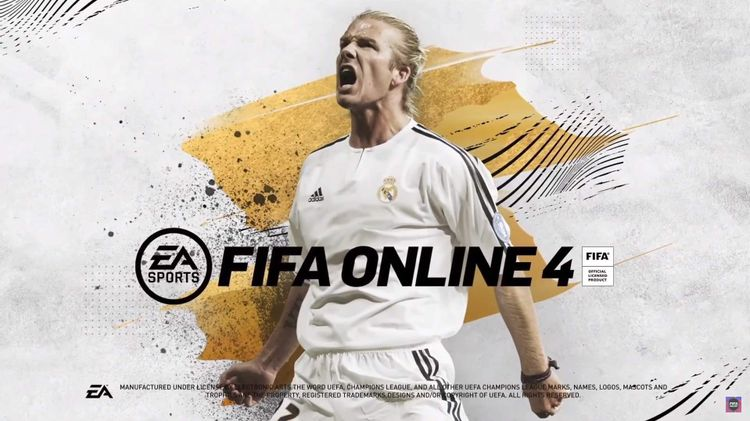

EA SPORTS IT'S IN THE GAME
2018년 5 월 17일에 서비스를 시작한 FIFA 온라인 4 (EA Sports™ FIFA Online 4 또는
FIFA Online 4, 이하 피파 온라인 4)는 EA 산하의 EA 코리아 스튜디오(구 스피어헤드)에서 개발하고
넥슨이 배급하는 피파 온라인 3의 후속작이다. 피파 18을 원작으로 두고 있다.
2017년 11월 2일에 열린 EA x 넥슨 뉴 프로젝트 미디어 쇼케이스 에서 처음으로 공개되었다